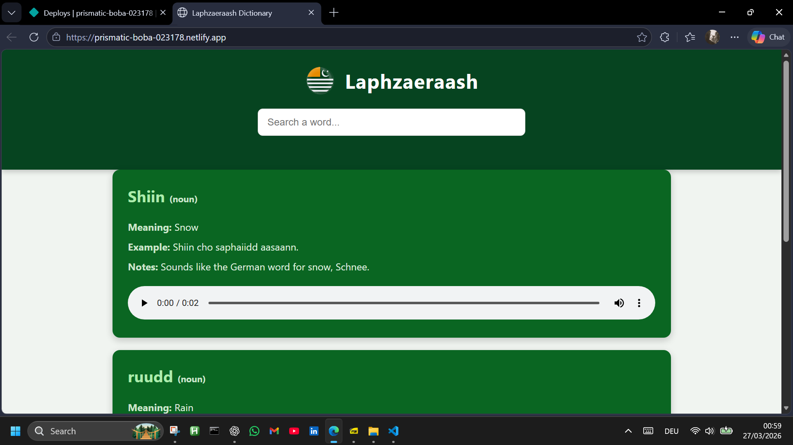

Laphzaeraash – Interaktives Wörterbuch

Laphzaeraash – Interaktives Wörterbuch (KI-gestütztes Sprachlern-Tool)
Im Rahmen dieses Projekts wurde ein interaktiver Wörterbuch-Prototyp für eine nicht
dokumentierte Sprache entwickelt. Die Webanwendung ermöglicht das dynamische Laden,
Anzeigen und Durchsuchen von Wörtern über eine JSON-Datenstruktur und bietet zusätzlich
Multimedia-Funktionen wie Audioaussprachen. Die Umsetzung erfolgte mit Unterstützung
von KI-Tools (ChatGPT) zur Code-Strukturierung, Fehlersuche und UI-Optimierung.
Das Projekt wurde über GitHub versioniert und als statische Website über Netlify
deployed, um eine öffentlich zugängliche Demonstrationsanwendung bereitzustellen.
Technologien: HTML5, CSS3, JavaScript, JSON, GitHub, Netlify, ChatGPT (KI-gestützte Entwicklung)